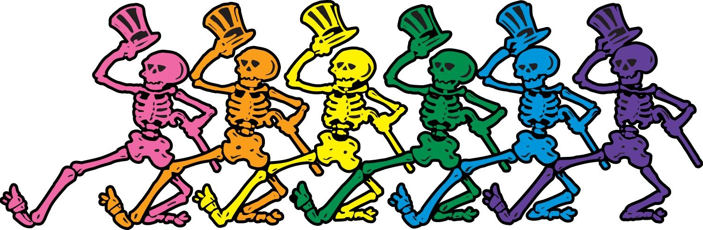

 <!--
Design by Bryant Smith
http://www.bryantsmith.com
http://www.aszx.net
email: template [-at-] bryantsmith [-dot-] com
Released under Creative Commons Attribution 2.5 Generic.  In other words, do with it what you please; but please leave the link if you'd be so kind :)

Name       : Creative Inspiration
Description: One column, no nav
Version    : 1.0
Released   : 20081009
-->
<DOCTYPE=html>
<html>
<head>
   <script src="https://ajax.googleapis.com/ajax/libs/jquery/3.1.1/jquery.min.js"></script>
  <style>
  html,body{
    background-color:#000;
    width:100%;
    height:100%;
    margin:0;
    padding:0;
    overflow-x: hidden;
}
#song{
  position:absolute;
  background:#ccc;
  width:80%;
  min-height:100%;
  left:10%;
}
.line{
  font-size:30px;
  animation: slide-left 2s;
  border-bottom: solid black 1px;
  margin-left:30px;
}
@keyframes slide-left {
  from {
    margin-left: 100%;
    width: 300%;
  }

  to {
    margin-left: 30px;
    width: 100%;
  }
}
  </style>
  <script src= "svg.js"></script>
<meta charset="UTF-8">
</head>

<body>
  </img>
  <div id ="song">
  </div>
  <script src="index.js"></script>
</body>
</html>
